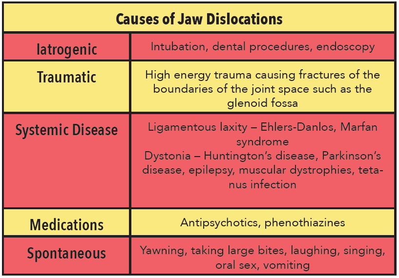
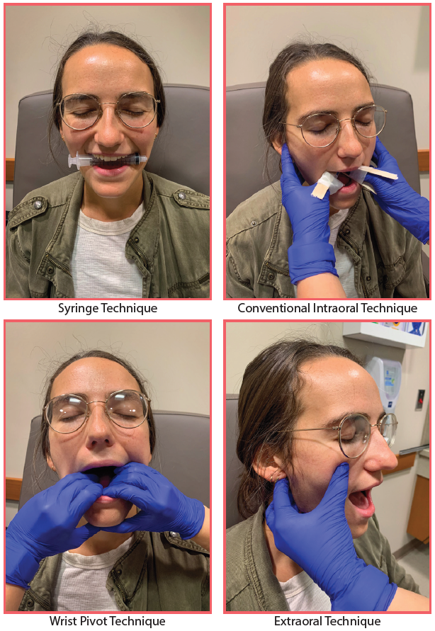

The patient is a female in her 20s with a past medical history of asthma and multiple facial surgeries who presents to the emergency department with jaw pain. The patient reports that she previously sustained a mandibular fracture after blunt facial trauma from a line-drive softball three years ago and has had multiple temporomandibular joint (TMJ) dislocations and oromaxillofacial surgeries since this event. She is undergoing continuing evaluation with oral maxillofacial surgery (OMFS) for further management of her recurrent dislocations. Her current episode of discomfort started yesterday evening. She endorses persistent right jaw pain, and feels that her jaw is dislocated on this side. Patient denies difficulty managing her secretions, and endorses no shortness of breath, chest pain, lightheadedness, or dizziness. There was no precipitating trauma yesterday to cause her current discomfort.
Past Medical History: asthma, recurrent TMJ dislocation
Past Surgical History: Multiple mandibular surgeries with OMFS after mandibular fracture
Social History: Denies tobacco, alcohol, or drug use
Vitals: T 36.6 HR 78 BP 128/84 RR 18 SpO2 99% on RA
The patient is a well-nourished female in no acute distress. There are no outward signs of trauma on examination of the head. On head, eyes, ears, nose, and throat exam, the patient’s mandible is deviated to the right with respect to the maxilla. There is malocclusion of her dentition. Her mucous membranes are moist, and she has no respiratory distress, stridor, or drooling on examination. Patient has difficulty opening her mouth, limiting examination of the oropharynx. The neck is supple and the trachea is midline. Clear and equal breath sounds are noted bilaterally. The remainder of the physical exam is unremarkable
The patient’s physical exam findings of right mandibular deviation and reported history of multiple jaw dislocations after mandibular fracture were concerning for recurrent left TMJ dislocation. She was in no respiratory distress and her vitals were stable without signs of airway compromise. Non-contrast maxillofacial CT was ordered to further assess her dislocation for accompanying fracture, and OMFS was consulted given her complex operative history.
Maxillofacial CT revealed no acute mandibular fracture. This study additionally demonstrated findings of repetitive dislocation of the left TMJ with remodeling of the condylar head and articular eminence, along with malocclusion and rightward displacement of the mandible with respect to the maxilla. OMFS consultant recommended transfer to their outpatient clinic for further management and reduction of the jaw. Patient was discharged from the emergency department to the OMFS clinic for further treatment and had successful reduction of her dislocation.
Temporomandibular joint dislocation is an important entity for emergency physicians to recognize, as it causes significant discomfort to patients and is potentially reducible in the emergency department with certain techniques. The mandible most commonly dislocates in the anterior direction, as the superior border of the glenoid fossa and the posterior border of the external acoustic meatus prevent dislocation without accompanying fracture of these bones. [1] Spontaneous anterior dislocations tend to occur with movements that hyperextend the mouth widely, such as with yawning or chewing. Medical conditions that cause ligamentous laxity, including Marfan Syndrome or Ehlers-Danlos Syndrome, may predispose the patient to jaw dislocation. Dystonic movements from medications or underlying medical conditions like Huntington’s disease or epilepsy may also cause jaw dislocation to occur in certain patients. [2] Posterior, lateral, or superior joint dislocations often result from fracture of the bordering bones of the joint space or the mandible itself. [3]
Anatomically, anterior TMJ dislocation occurs when the head of the mandible slides out of the mandibular fossa and locks in front of the articular eminence. The resulting stretch causes spasm of the masseter, pterygoid, and temporalis muscles, which locks the jaw out of place in an open position. Patients with bilateral anterior jaw dislocation typically present to the ED holding their mouth open. In unilateral jaw dislocation, the chin deviates away from the area of dislocation. [3] The patient’s speech may be difficult to understand, and they may demonstrate drooling on physical examination. Palpation of the preauricular space is typically painful, and the empty fossae may be palpable on examination along with the anteriorly displaced coronoid process of the mandible. These patients are usually uncomfortable but nontoxic-appearing and afebrile with normal vital signs.
Prior to reduction of the dislocation, imaging should be obtained to evaluate for accompanying fracture. Jaw radiographs may be appropriate, especially when there is no history of trauma, or in pediatric patients to minimize exposure to radiation. [4] Maxillofacial CTs should be completed if there is a history of traumatic injury to evaluate for any accompanying injuries or fractures. [5]
Several techniques for reduction in the emergency department have been described in the literature. Adequate analgesia and anxiolysis can facilitate both reduction and patient cooperation with certain reduction maneuvers. One of the most commonly discussed techniques for TMJ reduction is the syringe method, which was developed in 2014. [6] In the population studied, 97% of patients had successful reduction, the majority of which occurred within one minute. [6] To accomplish this method, a syringe is placed in the patient’s mouth near the posterior molars on the affected side. The patient is then instructed to bite down gently and roll the syringe back and forth between the jaws, encouraging the jaw to slide back into place. The syringe size is chosen based on the largest size that can be accommodated by the patient’s mouth while engaging the posterior molars (most commonly a 5 or 10cc syringe is used). This method is a preferred starting point for many as it requires minimal analgesia and does not require the provider to place their hands in the patient’s mouth for reduction.
Other methods require provider hand placement in the oral cavity to guide the mandible into place. With these techniques, care should be taken to prevent injury to the provider, as the patient’s jaw muscles can contract and cause bite injuries and subsequent infection. Tongue blades taped to the anterior and posterior surfaces of the clinician’s thumbs or alternatively, finger splints can be used to protect the fingers for the intraoral method. Suction should be at the ready for these techniques. Intraoral manual reduction is conventionally completed from the front of the patient. [3] With this technique, an assistant should stabilize the patient’s head from behind while the provider places the thumbs either on the occlusal surfaces of the mandibular molars or on the gum surface of the mandible just posterior to the molars. The fingers grasp the chin near the angle of the mandible, and the provider exerts a posterior and inferior force on the mandible to encourage the mandibular head to slide back under the articular eminence. Unconventionally, the provider can stand behind a seated patient and place the patient’s head against his or her abdomen while placing the thumbs in a similar position with fingers grasped around the chin. [7] Again, downward pressure is applied similarly to encourage reduction of the TMJ. In both cases, the provider may need to facilitate muscle fatigue by exerting continuous pressure or gently rocking the jaw back and forth to relax the muscles. If unsuccessful, auriculotemporal nerve block or local infiltration of anesthetic into the empty joint space may further assist with pain control and promote reduction. [8]
The wrist-pivot method is another option for reduction. [9,10] With this technique, the provider’s thumbs are placed on the mental eminence of the mandible with the rest of the fingers placed on the occlusal surfaces of the mandibular molars. The provider’s fingers provide inferior-directed pressure while the wrists ulnar deviate and flex to slide the condyles under the articular eminence back into the glenoid fossa.
A technique in addition to the syringe method that avoids intraoral placement of the provider’s hands involves palpation of the anteriorly dislocated coronoid process. [11] On one side of the patient, the fingers grasp the angle of the mandible with the thumb over the malar eminence and direct the jaw anteriorly. This causes further dislocation of the ipsilateral joint, but facilitates reduction of the contralateral TMJ. On this contralateral side, the thumb provides continuous downward pressure on the coronoid process while the fingers grip the mastoid process as counterpressure to encourage reduction of the joint. This method may be more uncomfortable for patients given the sustained pressure on bony surfaces and further dislocation of the ipsilateral joint as described above, but was found to be successful in the reduction of dislocation in seven patients for whom traditional intraoral techniques had failed. [11]
A recent randomized clinical trial in 2016 compared the success of the conventional intraoral, wrist pivot, and extraoral methods. [12] Their relative success rates were found to be 86.7%, 96.7%, and 66.7% respectively using randomly allocated groups. [12] The syringe method was not evaluated in this study. The extraoral method was found to be most uncomfortable for both patient and provider and was the most technically difficult. The wrist pivot method was deemed the easiest. Risk of trauma and infection were still noted with intraoral placement of the thumb or fingers with the conventional and wrist pivot methods.
Once reduction is achieved, the patient should be reassessed for pain or malocclusion. Patients should undergo repeat x-rays to assess for successful jaw positioning and to reassess for iatrogenic fractures. Patients should be instructed to avoid extreme mouth opening, such as yawning, for several weeks to prevent recurrence of dislocation. Non-steroidal anti-inflammatory drugs are generally recommended for pain control, and patients are encouraged to eat a soft diet. Cool or warm compresses applied to the temporomandibular joint may assist further with pain control. [3] OMFS follow up should be scheduled within the week for further recommendations and management, as these patients are prone to recurrence of jaw dislocation.
An understanding of the anatomy and common mechanisms of jaw dislocations can assist the emergency provider in diagnosing and treating this debilitating condition in the emergency department. Possessing an arsenal of reduction techniques can help the provider achieve TMJ reduction when initial attempts fail. The syringe technique is typically a reasonable starting point, as it avoids intraoral placement of the provider’s hands and is generally well-tolerated by patients. The wrist pivot method may be chosen next, as it is intuitive for providers and has been rated less painful by patients. Precautions should be taken to prevent bite injury with this technique. The conventional intraoral or extraoral counterpressure methods may be attempted if the aforementioned methods fail. Becoming familiar and comfortable with these techniques will help the emergency physician more successfully address this complaint when encountered in the emergency department.